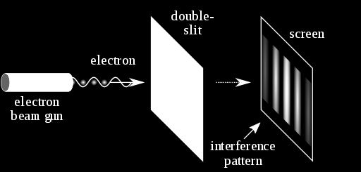
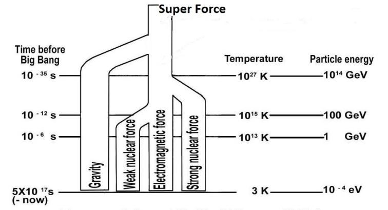

4b(2). Nafs (Composite Soul)
4b(2)। নফস (যৌগিক আত্মা)
Another kind of soul is called nafs. "Nafs" is an Arabic word. I write it as "nafses" in plural form. Both ruh and nafs are translated as "soul", but there are differences between a ruh and a nafs. A ruh is an elementary soul (a force field), but a nafs is a composite soul. A combination of two or more force fields (elementary souls / ruhs) makes a nafs (composite soul). For example, Strong Nuclear Force Field, Magnetic Force Field, and Weak Nuclear Force Field jointly make the nafs of an atom. The nafs holds the particles, such as electrons, protons, neutrons, etc., and forms the atom. Many natural systems and all living creatures have nafses as their main souls. Therefore, we may define a nafs as a combination of two or more force fields, which sustains a system and determines its form, nature, and activities. Scientists have so far discovered four kinds of force fields such as Strong Nuclear Force Field, Electromagnetic Force Field, Weak Nuclear Force, and Gravitational Force. There should be more kinds of force fields in the nature with different characteristics, which are not yet discovered (2023). An animal‘s nafs is a combination of such undiscovered and unknown force fields. We find the indications of the unknown force fields from consciousness and emotions, such as fear, anger, disgust, etc., of an animal. The consciousness and the emotions are inherent qualities of the force fields. The more number of force fields a nafs (a composite soul) has, the more number of emotions it has. There is no sign among the scientists that they are thinking on the force fields that may be working in an animal—trying for their detection is a far cry. They like to make bizarre theories to explain the complex natural systems. [The human nafs is deliberately discussed in Section- 10 of Chapter-6]
আরেক ধরনের আত্মাকে বলা হয় নফস। "নফস" একটি আরবি শব্দ। আমি এটিকে বহুবচনে "নফসেস" হিসাবে লিখি। রুহ এবং নফস উভয়কেই "আত্মা" হিসাবে অনুবাদ করা হয়, তবে রুহ এবং নফসের মধ্যে পার্থক্য রয়েছে। একটি রুহ একটি প্রাথমিক আত্মা (একটি শক্তি ক্ষেত্র), কিন্তু একটি নফস একটি যৌগিক আত্মা। দুই বা ততোধিক বল ক্ষেত্রের সংমিশ্রণ (প্রাথমিক আত্মা/রুহ) একটি নফস (যৌগিক আত্মা) তৈরি করে। উদাহরণস্বরূপ, স্ট্রং নিউক্লিয়ার ফোর্স ফিল্ড, ম্যাগনেটিক ফোর্স ফিল্ড এবং দুর্বল নিউক্লিয়ার ফোর্স ফিল্ড যৌথভাবে একটি পরমাণুর নফস তৈরি করে। নফস কণা যেমন ইলেকট্রন, প্রোটন, নিউট্রন ইত্যাদিকে ধরে রাখে এবং পরমাণু গঠন করে। অনেক প্রাকৃতিক ব্যবস্থা এবং সমস্ত জীবন্ত প্রাণীর মূল আত্মা হিসাবে নফস রয়েছে। অতএব, আমরা একটি নফসকে দুই বা ততোধিক বল ক্ষেত্রের সংমিশ্রণ হিসাবে সংজ্ঞায়িত করতে পারি, যা একটি সিস্টেমকে টিকিয়ে রাখে এবং এর রূপ, প্রকৃতি এবং কার্যকলাপ নির্ধারণ করে। বিজ্ঞানীরা এ পর্যন্ত চার ধরনের বল ক্ষেত্র যেমন স্ট্রং নিউক্লিয়ার ফোর্স ফিল্ড, ইলেক্ট্রোম্যাগনেটিক ফোর্স ফিল্ড, দুর্বল নিউক্লিয়ার ফোর্স এবং গ্র্যাভিটেশনাল ফোর্স আবিষ্কার করেছেন। প্রকৃতিতে বিভিন্ন বৈশিষ্ট্য সহ আরও ধরণের বল ক্ষেত্র থাকা উচিত, যা এখনও আবিষ্কৃত হয়নি (2023)। একটি প্রাণীর নফস হল এই ধরনের অনাবিষ্কৃত এবং অজানা বল ক্ষেত্রের সংমিশ্রণ। আমরা চেতনা এবং আবেগ থেকে অজানা শক্তি ক্ষেত্রের ইঙ্গিত খুঁজে পাই, যেমন ভয়, রাগ, বিতৃষ্ণা, ইত্যাদি, একটি প্রাণীর। চেতনা এবং আবেগ শক্তি ক্ষেত্রের অন্তর্নিহিত গুণাবলী। একটি নফসের (একটি যৌগিক আত্মা) যত বেশি সংখ্যক বল ক্ষেত্র আছে, তার আবেগের সংখ্যাও তত বেশি। বিজ্ঞানীদের মধ্যে এমন কোন চিহ্ন নেই যে তারা কোন প্রাণীর মধ্যে কাজ করতে পারে এমন শক্তির ক্ষেত্র নিয়ে চিন্তা করছে- তাদের সনাক্তকরণের চেষ্টা করা অনেক দূরের কথা। জটিল প্রাকৃতিক ব্যবস্থা ব্যাখ্যা করার জন্য তারা উদ্ভট তত্ত্ব তৈরি করতে পছন্দ করে। [অধ্যায়-6 এর ধারা-10-এ মানুষের নফস ইচ্ছাকৃতভাবে আলোচনা করা হয়েছে]
4c. Light and Subatomic Particles
4 গ. আলো এবং সাবটমিক কণা
The light is electro-magnetic force field. There are two kinds of force fields in the light such as electric field and magnetic field. So, the light should be a nafs. But, the light is called ruh as well. The verses of the Quran came as brain data (low intensity electromagnetic force / light), which are called ruhs in the Quran. So, the main difference between a ruh and a nafs is that a ruh works as a command, and a nafs sustains / supports a system. A sub-atomic particle shows wave-particle duality—it flips back-and-forth as particle and wave. It is conscious as well. Its duality and consciousness can be detected by the following test: FIGURE 1.9: Double-slit Experiment

চিত্র 1_9 / Figure 1_9
আলো ইলেক্ট্রো-চৌম্বকীয় বল ক্ষেত্র। আলোতে দুটি ধরণের বল ক্ষেত্র রয়েছে যেমন বৈদ্যুতিক ক্ষেত্র এবং চৌম্বক ক্ষেত্র। সুতরাং, আলো একটি নফস হওয়া উচিত। কিন্তু, আলোকেও রুহ বলা হয়। কুরআনের আয়াতগুলো এসেছে মস্তিষ্কের উপাত্ত (কম তীব্রতার ইলেক্ট্রোম্যাগনেটিক ফোর্স/আলো) হিসেবে, যেগুলোকে কুরআনে রুহ বলা হয়। সুতরাং, একটি রুহ এবং একটি নফসের মধ্যে প্রধান পার্থক্য হল যে একটি রুহ একটি আদেশ হিসাবে কাজ করে এবং একটি নফস একটি সিস্টেমকে টিকিয়ে রাখে / সমর্থন করে। একটি উপ-পারমাণবিক কণা তরঙ্গ-কণার দ্বৈততা দেখায়-এটি কণা এবং তরঙ্গ হিসাবে পিছনে পিছনে উল্টে যায়। এটাও সচেতন। এর দ্বৈততা এবং চেতনা নিম্নলিখিত পরীক্ষার মাধ্যমে সনাক্ত করা যেতে পারে: চিত্র 1.9: ডাবল-স্লিট পরীক্ষা
চিত্র 1_9 / Figure 1_9
―A laser beam illuminates a plate pierced by two parallel slits, and the light passing through the slits is observed on a screen behind the plate. The wave nature of light causes the light waves passing through the two slits to interfere, producing bright and dark bands on the screen—a result that would not be expected if light consisted of classical particles. However, the light is always found to be absorbed at the screen at discrete points, as individual particles (not waves), the interference pattern appearing via the varying density of these particle hits on the screen. Furthermore, versions of the experiment that include detectors at the slits find that each detected photon passes through one slit (as would a classical particle), and not through both slits (as would a wave). However, such experiments demonstrate that particles do not form the interference pattern if one detects which slit they pass through. These results demonstrate the principle of wave- particle duality.‖ – Wikipedia, The Free Encyclopedia The experiment shows that a free subatomic particle, moving as wave, becomes a particle when it is observed. So, it can sense that it is being observed. Therefore, a nafs is conscious, and it has two or more emotions.
- একটি লেজার রশ্মি দুটি সমান্তরাল স্লিট দ্বারা ছিদ্র করা একটি প্লেটকে আলোকিত করে এবং স্লিটের মধ্য দিয়ে যাওয়া আলো প্লেটের পিছনে একটি পর্দায় পরিলক্ষিত হয়। আলোর তরঙ্গ প্রকৃতির কারণে দুটি স্লিটের মধ্য দিয়ে যাওয়া আলোক তরঙ্গগুলি হস্তক্ষেপ করে, পর্দায় উজ্জ্বল এবং গাঢ় ব্যান্ড তৈরি করে- যার ফলে আলো ধ্রুপদী কণার সমন্বয়ে প্রত্যাশিত হবে না। যাইহোক, আলো সর্বদা আলাদা বিন্দুতে পর্দায় শোষিত হতে দেখা যায়, পৃথক কণা (তরঙ্গ নয়), পর্দায় এই কণার আঘাতের বিভিন্ন ঘনত্বের মাধ্যমে হস্তক্ষেপের প্যাটার্ন প্রদর্শিত হয়। তদ্ব্যতীত, পরীক্ষা-নিরীক্ষার সংস্করণগুলি যেগুলি স্লিটের ডিটেক্টরগুলিকে অন্তর্ভুক্ত করে তাতে দেখা যায় যে প্রতিটি সনাক্ত করা ফোটন একটি স্লিটের মধ্য দিয়ে যায় (যেমন একটি ধ্রুপদী কণা হবে), এবং উভয় স্লিটের মধ্য দিয়ে নয় (যেমন একটি তরঙ্গ হবে)। যাইহোক, এই ধরনের পরীক্ষাগুলি দেখায় যে কণাগুলি হস্তক্ষেপের প্যাটার্ন তৈরি করে না যদি কেউ সনাক্ত করে যে তারা কোন স্লিটের মধ্য দিয়ে যায়। এই ফলাফলগুলি তরঙ্গ-কণা দ্বৈততার নীতি প্রদর্শন করে৷‖ – উইকিপিডিয়া, দ্য ফ্রি এনসাইক্লোপিডিয়া পরীক্ষাটি দেখায় যে একটি মুক্ত উপ-পরমাণু কণা, তরঙ্গ হিসাবে চলমান, যখন এটি পর্যবেক্ষণ করা হয় তখন একটি কণা হয়ে যায়। সুতরাং, এটি অনুভব করতে পারে যে এটি পর্যবেক্ষণ করা হচ্ছে। অতএব, একটি নফস সচেতন, এবং এতে দুই বা ততোধিক আবেগ রয়েছে।
4d. Atom and Universe
4d. পরমাণু এবং মহাবিশ্ব
The atoms are the basic building blocks of the universe. Once the atoms were created, the universe was created. An atom is created from different kinds of ruhs (force fields) and nafses (subatomic particles). So, the universe is created from different kinds of souls.
পরমাণু হল মহাবিশ্বের মৌলিক বিল্ডিং ব্লক। পরমাণু সৃষ্টি হলে মহাবিশ্ব সৃষ্টি হয়। একটি পরমাণু বিভিন্ন ধরণের রুহস (বল ক্ষেত্র) এবং নফসেস (সাবটমিক কণা) থেকে তৈরি হয়। সুতরাং, মহাবিশ্ব সৃষ্টি হয়েছে বিভিন্ন ধরণের আত্মা থেকে।
4e. GUT (Grand Unified Theory) Force
4ই. GUT (গ্র্যান্ড ইউনিফাইড থিওরি) বল
The scientists have so far discovered four kinds of forces such as Electromagnetic Force Field, Weak Nuclear Force Field, Strong Nuclear Force Field, and Gravitational Force. They think that the forces originated from a Super Force. ―Physicists had believed that there were four fundamental forces of nature: the gravitational force, the strong and weak nuclear forces and the electromagnetic force. Salam had worked on the unification of these forces from 1959 with Glashow and Weinberg. While at Imperial College London, Salam successfully showed that weak nuclear forces are not really different from electromagnetic forces, and two could inter-convert. Salam provided a theory that shows the unification of two fundamental forces of nature, weak nuclear forces and the electromagnetic forces, one into another.‖ – Wikipedia, The Free Encyclopedia
বিজ্ঞানীরা এ পর্যন্ত চার ধরনের শক্তি যেমন ইলেক্ট্রোম্যাগনেটিক ফোর্স ফিল্ড, উইক নিউক্লিয়ার ফোর্স ফিল্ড, স্ট্রং নিউক্লিয়ার ফোর্স ফিল্ড এবং গ্র্যাভিটেশনাল ফোর্স আবিষ্কার করেছেন। তারা মনে করে যে বাহিনী একটি সুপার ফোর্স থেকে উদ্ভূত হয়েছে। পদার্থবিদরা বিশ্বাস করতেন যে প্রকৃতির চারটি মৌলিক শক্তি রয়েছে: মহাকর্ষীয় বল, শক্তিশালী এবং দুর্বল পারমাণবিক শক্তি এবং তড়িৎ চৌম্বকীয় বল। সালাম 1959 সাল থেকে গ্ল্যাশো এবং ওয়েইনবার্গের সাথে এই বাহিনীর একীকরণে কাজ করেছিলেন। ইম্পেরিয়াল কলেজ লন্ডনে থাকাকালীন, সালাম সফলভাবে দেখিয়েছিলেন যে দুর্বল পারমাণবিক শক্তি ইলেক্ট্রোম্যাগনেটিক ফোর্স থেকে আসলেই আলাদা নয় এবং দুটি আন্তঃরূপান্তর করতে পারে। সালাম একটি তত্ত্ব প্রদান করেছেন যা প্রকৃতির দুটি মৌলিক শক্তি, দুর্বল পারমাণবিক শক্তি এবং তড়িৎ চৌম্বকীয় শক্তিকে একে অপরের সাথে একীভূতকরণ দেখায়।'' - উইকিপিডিয়া, দ্য ফ্রি এনসাইক্লোপিডিয়া।
FIGURE 1.10: GUT Force

চিত্র 1_10 / Figure 1_10
চিত্র 1.10: অন্ত্র বল
চিত্র 1_10 / Figure 1_10
The scientists think that above 1035 degree K the forces cannot remain separate; they unify into one force. As the universe expanded and cooled, the forces separated from one another. They think that the gravitational force separated when the temperature was above 1035 degree K. When the temperature dropped to 1027 degree K, the Strong Nuclear Force Field separated. The scientists find out that when the temperature dropped to 1015 degree K, the Weak Nuclear Force Field separated from the Electromagnetic Force Field (light). The scientists consider three of above force fields, except gravitational force, as the forces of the Grand Unified Theory (GUT), which produced the Big Bang / this universe. 4f. Nafsin-Wahidatin (A Nafs Single) and the GUT Force
বিজ্ঞানীরা মনে করেন 1035 ডিগ্রী K এর উপরে বলগুলি আলাদা থাকতে পারে না; তারা এক শক্তিতে একত্রিত হয়। মহাবিশ্ব প্রসারিত এবং শীতল হওয়ার সাথে সাথে শক্তিগুলি একে অপরের থেকে পৃথক হয়ে গেছে। তারা মনে করে যে তাপমাত্রা 1035 ডিগ্রী কে-এর উপরে থাকলে মাধ্যাকর্ষণ শক্তি আলাদা হয়ে যায়। যখন তাপমাত্রা 1027 ডিগ্রি কে-এ নেমে যায়, তখন শক্তিশালী নিউক্লিয়ার ফোর্স ফিল্ড আলাদা হয়। বিজ্ঞানীরা আবিষ্কার করেন যে তাপমাত্রা 1015 ডিগ্রি কে-এ নেমে গেলে, দুর্বল নিউক্লিয়ার ফোর্স ফিল্ড ইলেক্ট্রোম্যাগনেটিক ফোর্স ফিল্ড (আলো) থেকে আলাদা হয়ে যায়। বিজ্ঞানীরা মহাকর্ষীয় বল ব্যতীত উপরের তিনটি বল ক্ষেত্রকে গ্র্যান্ড ইউনিফাইড থিওরির (GUT) শক্তি হিসাবে বিবেচনা করেন, যা বিগ ব্যাং / এই মহাবিশ্বের সৃষ্টি করেছিল। 4f. নাফসিন-ওয়াহিদাতিন (একটি নফস একক) এবং জিইউটি ফোর্স
Nothing can be created from nothing. And, there was nothing except eternal Allah. Allah has a nafs (composite soul). It permeates His body in form. He breathed out a part of His nafs and transformed it into creation. The nafs He breathed out for the creation is called Nafsin-Wahidatin (a Nafs Single) in the following verses:
শূন্য থেকে কিছুই সৃষ্টি করা যায় না। আর, চিরস্থায়ী আল্লাহ ছাড়া কিছুই ছিল না। আল্লাহর একটি নফস (যৌগিক আত্মা) আছে। এটি তার শরীরে আকারে ছড়িয়ে পড়ে। তিনি তাঁর নফসের একটি অংশ ফুঁক দিয়ে তা সৃষ্টিতে রূপান্তরিত করেছেন। তিনি সৃষ্টির জন্য যে নফস ফুঁকেছেন তাকে নিম্নোক্ত আয়াতে নাফসিন-ওয়াহিদাতিন (একটি নফস একক) বলা হয়েছে:
―It is He Who has produced you from a Nafs Single (Nafsin-Wahidatin); here is a place of dwelling and storage—we detail Our signs for people who understand.‖ [Al Quran 6:98]
-তিনিই তোমাকে সৃষ্টি করেছেন এক নফস থেকে (নাফসিন-ওয়াহিদাতিন); এখানে আবাসস্থল ও সঞ্চয়স্থান- আমরা আমাদের নিদর্শনগুলো বিশদ বর্ণনা করি তাদের জন্য যারা বোঝে।'' [আল কুরআন ৬:৯৮]
―He created you from a Nafs Single (Nafsin- Wahidatin), then created favorable Pairs (DNA Double Helix), and He sent down for you of the cattle eight Pairs, He creates you in the wombs of your mothers—creation after creation—three tortures (on Allah). That Allah is your Lord. For Him is the dominion. There is no god but He. Then how are you turned away?‖ [Al Quran 39:6]
তিনি তোমাদের সৃষ্টি করেছেন একটি নফস একক (নাফসিন-ওয়াহিদাতিন) থেকে, তারপর সৃষ্টি করেছেন অনুকূল জোড়া (ডিএনএ ডাবল হেলিক্স), এবং তিনি তোমাদের জন্য গবাদি পশু থেকে আট জোড়া নাযিল করেছেন, তিনি তোমাদের মাতৃগর্ভে সৃষ্টি করেছেন-সৃষ্টির পর সৃষ্টি-তিনটি নির্যাতন (আল্লাহর উপর)। যে আল্লাহ তোমাদের পালনকর্তা। তাঁর জন্যই রাজত্ব। তিনি ছাড়া কোন উপাস্য নেই। তাহলে তোমরা কিভাবে মুখ ফিরিয়ে নিলে?'' [আল কুরআন 39:6]
The science says that the universe was created from the GUT Force, and the religion says that the universe was created from the Nafsin-Wahidatin (A Soul Single). Then why should we not consider the force field and the soul as the same thing? It is different in name only. We do not view the force fields soul-like, because our knowledge is limited, and we do not know all of them and all about their qualities, such as conscious, emotions, information they carry, acts they can perform, and so forth.
বিজ্ঞান বলে যে মহাবিশ্বের সৃষ্টি হয়েছে GUT শক্তি থেকে, এবং ধর্ম বলে যে মহাবিশ্ব সৃষ্টি হয়েছে নাফসিন-ওয়াহিদাতিন (একটি আত্মা) থেকে। তাহলে কেন আমরা বল ক্ষেত্র এবং আত্মাকে একই জিনিস হিসাবে বিবেচনা করব না? এটি শুধুমাত্র নামে ভিন্ন। আমরা শক্তি ক্ষেত্রগুলিকে আত্মার মতো দেখি না, কারণ আমাদের জ্ঞান সীমিত, এবং আমরা সেগুলি এবং তাদের সমস্ত গুণাবলী সম্পর্কে জানি না, যেমন সচেতন, আবেগ, তারা যে তথ্য বহন করে, তারা যে কাজগুলি সম্পাদন করতে পারে এবং আরও অনেক কিছু।
4f(1). First Part of Nafsin-Wahidatin
4f(1)। নাফসিন-ওয়াহিদাতিনের প্রথম খণ্ড
From the Nafsin-Wahidatin, Allah extracted the force fields that were needed to create the nafses of living creatures. The scientists have so far (2023) discovered four kinds of force fields such as Electromagnetic Force Field, Weak Nuclear Force Field, Strong Nuclear Force Field, and Gravitational Force from which the atoms are created and the objects are sustained. There should be other kinds of force fields in the nature with different characteristics. The force fields are not yet discovered (2023). The consciousness and the emotions come from these force fields. The nafs of a living creature is a combination of such force fields. The force fields too were given with the Nafsin-Wahidatin. Therefore, the Nafsin-Wahidatin may be called GUT Force + (Plus).
নফসীন-ওয়াহিদাতিন থেকে আল্লাহ তায়ালা জীবিত প্রাণীর নফসেস সৃষ্টির জন্য প্রয়োজনীয় শক্তির ক্ষেত্র বের করেন। বিজ্ঞানীরা এখন পর্যন্ত (2023) চার ধরনের বল ক্ষেত্র যেমন ইলেক্ট্রোম্যাগনেটিক ফোর্স ফিল্ড, উইক নিউক্লিয়ার ফোর্স ফিল্ড, স্ট্রং নিউক্লিয়ার ফোর্স ফিল্ড এবং গ্র্যাভিটেশনাল ফোর্স আবিষ্কার করেছেন যেখান থেকে পরমাণু তৈরি হয় এবং বস্তুগুলো টিকে থাকে। প্রকৃতিতে বিভিন্ন বৈশিষ্ট্য সহ অন্যান্য ধরণের বল ক্ষেত্র থাকা উচিত। বল ক্ষেত্রগুলি এখনও আবিষ্কৃত হয়নি (2023)। চেতনা এবং আবেগ এই বল ক্ষেত্র থেকে আসে. একটি জীবন্ত প্রাণীর নফস এই ধরনের শক্তি ক্ষেত্রের সমন্বয়। নাফসিন-ওয়াহিদাতিন দিয়ে ফোর্স ফিল্ডও দেওয়া হয়েছিল। অতএব, নাফসিন-ওয়াহিদাতিনকে GUT ফোর্স + (প্লাস) বলা যেতে পারে।
4f(2). Second Part of Nafsin-Wahidatin
4f(2)। নাফসিন-ওয়াহিদাতিনের দ্বিতীয় খণ্ড
From the second part of Nafsin-Wahidatin, He created the Arsh and a huge quantity of water. The water was filling a large part of the Super Space, beneath the Ash. Later, He created the Jannaat (another universe) from the bulk of the water. 4f(3). Third Part of Nafsin-Wahidatin
নাফসিন-ওয়াহিদাতিনের দ্বিতীয় অংশ থেকে তিনি আরশ ও বিপুল পরিমাণ পানি সৃষ্টি করেছেন। অ্যাশের নীচে জল সুপার স্পেসের একটি বড় অংশ ভর্তি করছিল। পরে, তিনি পানির বিশাল অংশ থেকে জান্নাত (অন্য মহাবিশ্ব) সৃষ্টি করেন। 4f(3)। নাফসিন-ওয়াহিদাতিনের তৃতীয় খণ্ড
From the third part of Nafsin-Wahidatin, He created this universe (Samawaat), the Kursi, and several other entities. The Holy Bible talks about this part of the Nafsin-Wahidatin in the following verses:
নাফসিন-ওয়াহিদাতিনের তৃতীয় অংশ থেকে, তিনি এই মহাবিশ্ব (সামাওয়াত), কুরসি এবং আরও কয়েকটি সত্তা সৃষ্টি করেছেন। পবিত্র বাইবেল নিম্নোক্ত আয়াতে নাফসিন-ওয়াহিদাতিনের এই অংশ সম্পর্কে আলোচনা করেছে:
―In the beginning, when God created the universe, the Earth was non-existent. The raging ocean that covered everything was engulfed in total darkness and the Soul of God was hovering over the water.‖ [Genesis 1 (1–2), Holy Bible, GNB]
- শুরুতে, ঈশ্বর যখন মহাবিশ্ব সৃষ্টি করেছিলেন, তখন পৃথিবীর অস্তিত্ব ছিল না। উত্তাল সমুদ্র যা সমস্ত কিছুকে ঢেকে ফেলেছিল সম্পূর্ণ অন্ধকারে আচ্ছন্ন ছিল এবং ঈশ্বরের আত্মা জলের উপরে ঘোরাফেরা করছিল।'' [জেনেসিস 1 (1-2), পবিত্র বাইবেল, GNB]
In above verse, the Soul is called the Soul of God because it belonged to God—He breathed it out from His body. In a Catholic Bible, the soul is translated as the "Breath of God":
উপরের আয়াতে, আত্মাকে ঈশ্বরের আত্মা বলা হয়েছে কারণ এটি ঈশ্বরের ছিল—তিনি এটিকে তাঁর দেহ থেকে ফুঁক দিয়েছিলেন। একটি ক্যাথলিক বাইবেলে, আত্মাকে "ঈশ্বরের শ্বাস" হিসাবে অনুবাদ করা হয়েছে:
―God, at the beginning of time created heaven (sky) and earth (land). Earth was still an empty waste and darkness hung over the deep, but already over its waters stirred the Breath of God‖ [Genesis 1 (1-2), Holy Bible (Knox)]
- ঈশ্বর, সময়ের শুরুতে আকাশ (আকাশ) এবং পৃথিবী (ভূমি) সৃষ্টি করেছেন। পৃথিবী তখনো একটি খালি আবর্জনা এবং অন্ধকার গভীরে ঝুলে ছিল, কিন্তু ইতিমধ্যেই এর জলের উপরে ঈশ্বরের নিঃশ্বাসকে আলোড়িত করেছে” [জেনেসিস 1 (1-2), পবিত্র বাইবেল (নক্স)]
So, the Breath of God was a part of Nafsin-Wahidatin from which the universe, the Kursi, and several other entities were created. When God commanded, ―Let there be light‖, the light appeared in this part:
সুতরাং, ঈশ্বরের নিঃশ্বাস ছিল নাফসিন-ওয়াহিদাতিনের একটি অংশ যা থেকে মহাবিশ্ব, কুরসি এবং আরও কিছু সত্তার সৃষ্টি হয়েছে। যখন ঈশ্বর আদেশ করলেন, "আলো হোক", এই অংশে আলো দেখা দিল:
―…Then God said: Let there be light. And the light began‖ [Genesis 1:3, Holy Bible (Knox)] It means that the Soul (the part of Nafsin-Wahidatin) disintegrated on the command of ―Let there be Light‖. The fragments were Strong Nuclear Force Field, Weak Nuclear Force Field, and Electromagnetic Force Field (Light). Subsequently, the universe was created from the force fields at a speed looking like the Big Bang. Therefore, the GUT Force that created the universe was the Soul (Nafs) that was hovering over the water. The Soul was a part of Nafsin-Wahidatin.
-…তখন ঈশ্বর বললেন: আলো হোক। এবং আলোর সূচনা হয় - [জেনেসিস 1:3, পবিত্র বাইবেল (নক্স)] এর অর্থ হল আত্মা (নাফসিন-ওয়াহিদাতিনের অংশ) "আলো হোক" আদেশে বিচ্ছিন্ন হয়ে গেল। খণ্ডগুলো ছিল শক্তিশালী নিউক্লিয়ার ফোর্স ফিল্ড, দুর্বল নিউক্লিয়ার ফোর্স ফিল্ড এবং ইলেক্ট্রোম্যাগনেটিক ফোর্স ফিল্ড (আলো)। পরবর্তীকালে, মহাবিশ্ব সৃষ্টি হয়েছিল বল ক্ষেত্র থেকে বিগ ব্যাং-এর মতো গতিতে। অতএব, মহাবিশ্বের সৃষ্টিকারী GUT শক্তি হল আত্মা (Nafs) যা জলের উপর ঘোরাফেরা করছিল। আত্মা ছিল নাফসিন-ওয়াহিদাতিনের একটি অংশ।